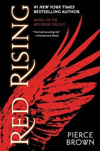

Book Club!
When the Covid lockdown began in March 2020, I found myself with
a lot of free time on my hands. My dad and I turned to reading
as a means to enrich this period, exchanging recommendations of
our favorite books. This tradition evolved, and now every
December, I compile a list of 12 books for us to read throughout
the following year. Reading is something I am really passionate
about, so please feel free to "join" our bookclub and read along
with us! I also have a list of
our favorite books
we've read throughout the years at the bottom of this page :)
2024
January - All Systems Red by Martha Wells (2017)
Sarah: 2/5. Well... I liked that it was short! I never dreaded
having to pick it up to read, but I also never really
connected with any of the characters. Not a strong start to
the year in my opinion.
Dad: 3/5. I think I liked this one more than Sarah. Enjoyed trying to understand Murderbot’s psychology. Quick & easy read. Decent story.
Dad: 3/5. I think I liked this one more than Sarah. Enjoyed trying to understand Murderbot’s psychology. Quick & easy read. Decent story.
February - The Hitchhiker's Guide to the Galaxy by Douglas Adams
(1979)
 Sarah: 2.5/5. There were a couple moments that made me laugh
and I can see how it could translate to a funny movie. Some of
the word play and silly characters reminded me of "The Phantom
Tollbooth" which is a GREAT book (that my dad also doesn't
like). Overall, though, it was pretty "meh" for me.
Sarah: 2.5/5. There were a couple moments that made me laugh
and I can see how it could translate to a funny movie. Some of
the word play and silly characters reminded me of "The Phantom
Tollbooth" which is a GREAT book (that my dad also doesn't
like). Overall, though, it was pretty "meh" for me.
Dad: 0.5/5. I’ll give it 0.5 for how earth’s demolition was announced. Hated the movie. Hated the book.
Sarah: 2.5/5. There were a couple moments that made me laugh
and I can see how it could translate to a funny movie. Some of
the word play and silly characters reminded me of "The Phantom
Tollbooth" which is a GREAT book (that my dad also doesn't
like). Overall, though, it was pretty "meh" for me.
Dad: 0.5/5. I’ll give it 0.5 for how earth’s demolition was announced. Hated the movie. Hated the book.
March - Flowers for Algernon by Daniel Keys (1966)
 Sarah:
Sarah:
Dad: 4/5. As soon as I started reading the story came flooding back to me. This book was required reading in school when I was a kid. Great story with an excellent message.
Sarah:
Dad: 4/5. As soon as I started reading the story came flooding back to me. This book was required reading in school when I was a kid. Great story with an excellent message.
April - Escape from Camp 14 by Blaine Harden (2012)

May - The Toaster Project by Thomas Thwaites (2011)

June - Stories of Your Life and Others by Ted Chiang (2002)

July - The Endurance: Shackleton's Legendary Antarctic
Expedition by Alfred Lansing (1959)

August - Red Rising by Pierce Brown (2014)

September - The Spy and the Traitor: The Greatest Espionage
Story of the Cold War by Ben Macintyre (2018)

October - Several People Are Typing by Calvin Kasulke (2021)

November - Sandworm: A New Era of Cyberwar and the Hunt for the
Kremlin's Most Dangerous Hackers by Andy Greenberg (2019)

December - Before the Coffee Gets Cold by Toshikazu Kawaguchi
(2015)

Hall of Fame
February 2022 - American Kingpin: The Epic Hunt for the Criminal
Mastermind Behind the Silk Road by Nick Bilton
(2017)
 Sarah: 5/5! This is tied for my favorite book of all time! I
love how well the author explains both sides of the story
(Ross and the FBI). I would switch who I was rooting for every
chapter, it was genuinely incredible story-telling. This is my
most-recommended book of all time and I've probably loaned out
my hard copy of the book at least 10 times.
Sarah: 5/5! This is tied for my favorite book of all time! I
love how well the author explains both sides of the story
(Ross and the FBI). I would switch who I was rooting for every
chapter, it was genuinely incredible story-telling. This is my
most-recommended book of all time and I've probably loaned out
my hard copy of the book at least 10 times.
Dad: 5/5! A true story view into a world that I never knew existed. Ever wonder how seemingly normal people end up in crazy places? Fascinating.
Sarah: 5/5! This is tied for my favorite book of all time! I
love how well the author explains both sides of the story
(Ross and the FBI). I would switch who I was rooting for every
chapter, it was genuinely incredible story-telling. This is my
most-recommended book of all time and I've probably loaned out
my hard copy of the book at least 10 times.
Dad: 5/5! A true story view into a world that I never knew existed. Ever wonder how seemingly normal people end up in crazy places? Fascinating.
June 2021 - Project Hail Mary by Andy Weir
(2021)
 Sarah: 4.5/5. Andy Weir also wrote The Martian which is one of
my favorite books of all time. I felt like this book had a
similar vibe, but was more physics-based while The Martian is
biology-based. Some really interesting ideas were thrown
around in this book (purposefully causing global warming
because the Sun is dying??) and I love the sense of humor the
main character has.
Sarah: 4.5/5. Andy Weir also wrote The Martian which is one of
my favorite books of all time. I felt like this book had a
similar vibe, but was more physics-based while The Martian is
biology-based. Some really interesting ideas were thrown
around in this book (purposefully causing global warming
because the Sun is dying??) and I love the sense of humor the
main character has.
Dad: 4/5 . The Martian is one of my all-time favorite books. I kept my expectations low for Project Hail Mary (and Artemis) for fear of disappointment. Project Hail Mary is a solid Sci-Fi novel. It’s no “The Martian”, but it’s better than Artemis (which is also an adequate read).
Sarah: 4.5/5. Andy Weir also wrote The Martian which is one of
my favorite books of all time. I felt like this book had a
similar vibe, but was more physics-based while The Martian is
biology-based. Some really interesting ideas were thrown
around in this book (purposefully causing global warming
because the Sun is dying??) and I love the sense of humor the
main character has.
Dad: 4/5 . The Martian is one of my all-time favorite books. I kept my expectations low for Project Hail Mary (and Artemis) for fear of disappointment. Project Hail Mary is a solid Sci-Fi novel. It’s no “The Martian”, but it’s better than Artemis (which is also an adequate read).
April 2023 - Ghost in the Wires: My Adventures as the World's
Most Wanted Hacker by Kevin Mitnick
(2011)
 Sarah: 4/5. What a cool guy!! People seek adrenaline in a lot
of different ways, it's so funny to me that his vice was
breaking into companies software just for the fun of it. It's
cool that he made a career out of hacking after getting out of
jail for it. Reading this book got me really interested in
cyber security (at the time I was a hotel manager) and now I'm
in grad school studying software development!
Sarah: 4/5. What a cool guy!! People seek adrenaline in a lot
of different ways, it's so funny to me that his vice was
breaking into companies software just for the fun of it. It's
cool that he made a career out of hacking after getting out of
jail for it. Reading this book got me really interested in
cyber security (at the time I was a hotel manager) and now I'm
in grad school studying software development!
Dad: 4/5. Kevin Mitnik (RIP) was just a few years older than me, so I could relate to the time period technology and appreciate what he was able to accomplish. Addiction comes in many forms, and he certainly had his that he couldn’t give up even at risk of felony conviction. I was fascinated by his “Social Engineering”. Want to know how to get people to give you what you want (without them knowing that they are doing so)? Social Engineering continues to be one of the primary methods that the elderly (and others) are being targeted by fraudsters today.
Sarah: 4/5. What a cool guy!! People seek adrenaline in a lot
of different ways, it's so funny to me that his vice was
breaking into companies software just for the fun of it. It's
cool that he made a career out of hacking after getting out of
jail for it. Reading this book got me really interested in
cyber security (at the time I was a hotel manager) and now I'm
in grad school studying software development!
Dad: 4/5. Kevin Mitnik (RIP) was just a few years older than me, so I could relate to the time period technology and appreciate what he was able to accomplish. Addiction comes in many forms, and he certainly had his that he couldn’t give up even at risk of felony conviction. I was fascinated by his “Social Engineering”. Want to know how to get people to give you what you want (without them knowing that they are doing so)? Social Engineering continues to be one of the primary methods that the elderly (and others) are being targeted by fraudsters today.
February 2021 - The
Poisonwood Bible by Barbara Kingsolver (1998)
Sarah: 4/5. The Poisonwood Bible is one of those books that
you spend months thinking about. It's a very topical read,
living in Utah, where going on missions is a very common
thing. I think everyone should read this once in their life.
Dad: 5/5! Fantastic book. Too much to unpack in a few sentences. A “must read”.
Dad: 5/5! Fantastic book. Too much to unpack in a few sentences. A “must read”.
June 2023 -
Dungeon Crawler Carl by Matt Dinniman (2020)
Sarah: 5/5! This the funniest book I've read in a long time.
It's supposed to read like a video game and I think it does
that and more - you lose track of time and can't put it down
like a video game! This is a relatively new book, but I can
see it becoming a cult classic.
Dad: 4/5. Hilarious. If you like Shaun of the Dead, this book is for you.
Dad: 4/5. Hilarious. If you like Shaun of the Dead, this book is for you.